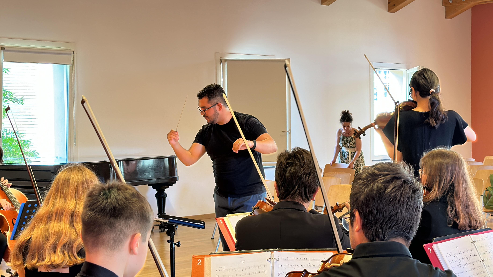

Daniel López Piepoli
An Innate Communicator with Contagious Charisma
Daniel López Piepoli (Venezuela, 1996) is an Italian-Venezuelan conductor currently based in Berlin, Germany. He trained as a Conductor in his native country, Venezuela, in El Sistema, the music education program initiated by maestro José Antonio Abreu. Besides his enthusiastic artistic vision and academic preparation, he has a natural affinity for languages (conversational in English, Spanish, Italian, Portuguese, and French).
Daniel’s artistry is portrayed by remarkable vivacity, sensitivity, and enthusiasm, which led him to win the 3rd Prize in the New York Classical Music Competition (USA), to be semi-finalist in the 2nd Italian International Conducting Competition in Bordighera (Italy) and finalist in the International Artists Competition (Austria) in 2023, year in which he made his debut in Italy with the Youth Strings Orchestra “Note Libere” of Sanremo.

In the same year, he participated in the 5th BMI International Conducting Competition with the Bucharest Symphony (Romania) and in the inaugural edition of the “Borislav Ivanov” International Competition for Young Conductors with the Varna State Opera (Bulgaria) as the only Latin American and representative of the American continent selected. Recently, in 2024, he was guest conductor of the Anima Orchestre et Art Lyrique in Paris (France).
Daniel started studying Orchestral Conducting with Ramón Moncada and Alexander Gómez, later continuing under the guidance of maestro and composer Alfredo Rugeles (former Artistic Director of the Simón Bolívar Symphony) in the National Experimental University of Arts in Caracas for the Bachelor in conducting, and Maestra Teresa Hernández (National Director of the Integral Chair of Orchestra Conducting and currently representative of El Sistema in Spain). He attended masterclasses with Dick Van Gasteren, Miguel Ángel Monroy, Alfredo Ascanio, Eddy Marcano, Régulo Stabilito, and David Cubek.
«An orchestra is not merely an ensemble of instruments; it is a collective pulse where discipline, joy, and deep human connection converge into sound.»
As musical director, Daniel was regularly invited to conduct several orchestras in his country, such as Falcón Regional Youth Symphony, Youth Symphony Orchestra of the Music Conservatory Simón Bolívar, La Victoria Youth Symphony, San Sebastián de los Reyes Youth Symphony, Ciudad Guayana Youth Symphony, and San Antonio de Los Altos Youth Symphony, eventually being appointed as Musical Director of INOF Symphony in Los Teques, Musical Conductor in charge of the Children and Youth Symphony Orchestras of Coro, and Assistant Conductor of the Regional del Este Youth Symphony in Caracas.
Strongly influenced by his own remarkable education as part of El Sistema, Daniel has begun a community project of a symphony orchestra in Berlin (Germany), mostly formed by immigrants and refugees, based on his own trajectory as trombone player, lyrical singer, and arranger. He studied trombone in the Latin American Academy of Trombones in Caracas, participated in several festivals dictated by the Simón Bolívar Symphony Orchestra of Venezuela and was an active member of the Youth Symphony Orchestras of Coro, Falcón, Chacao, Youth Symphony Orchestra of the Music Conservatory Simón Bolívar, Falcón Brass Ensemble, and the Central University of Venezuela Symphony. Besides, he also studied International Relations in the Central University of Venezuela and is passionate about languages, having created a program to teach languages through the bases of Classical Music.